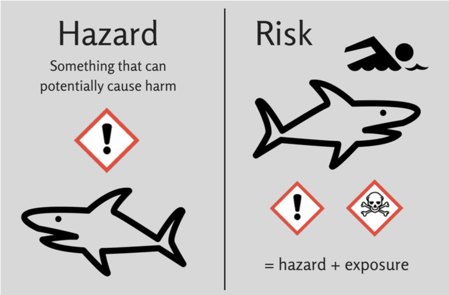
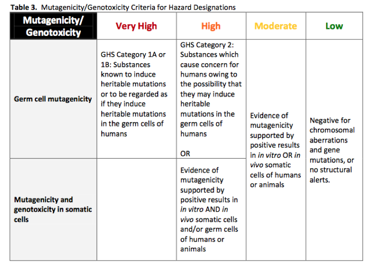
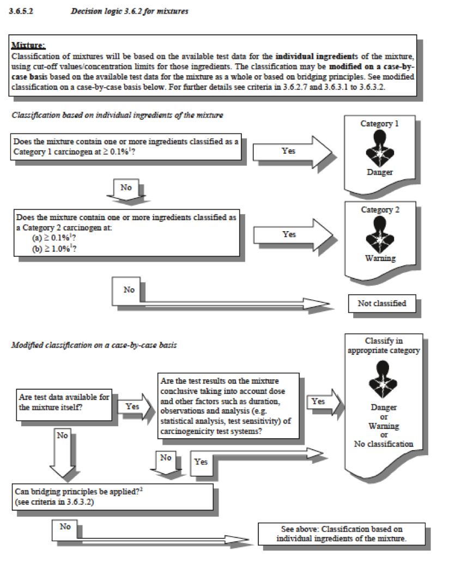
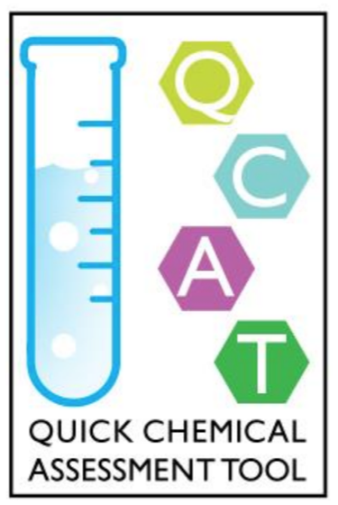
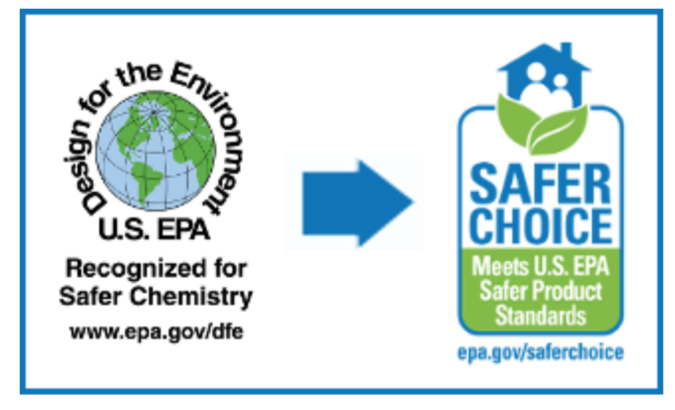
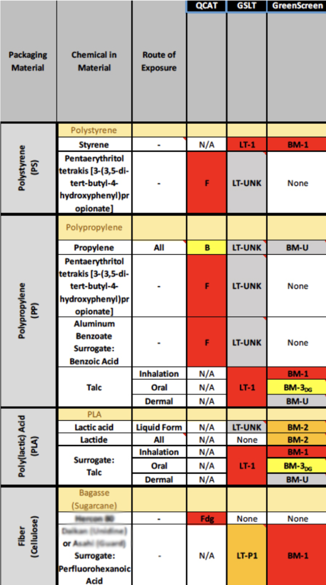

Contents
Resource 2: Chemical Hazard Assessment¶
Introduction to Chemical Hazard Assessment¶
This module will cover hazard assessment options. You can choose from a screening-level (option 1), intermediate (option 2) or advanced-level assessment (option 3); we also provide guidance at the end for a tiered approach that combines these levels. Information and resources about creating a chemical inventory are available in the Chemical Inventory Resource.
A number of chemical hazard assessment tools exist. Most are based heavily on the Globally Harmonised System of Classification and Labelling (GHS) and on authoritative and screening lists of chemical hazards. GHS provides detailed guidance for how to evaluate a broad set of human health, environmental and physical property hazards. GHS does not currently provide classification criteria for persistence (P), bioaccumulation potential (B) and endocrine disruption (EDC) and therefore criteria for these endpoints are supplemented in other schemes. An even more comprehensive set of hazard endpoints is provided by the California Environmental Protection Agency (CalEPA) in the US in support of their safer products program.
Foundational work on hazard assessment by McDonough Braungart Design Chemistry and the US Environmental Protection Agency Design for the Environment (DfE) Program as part of their alternatives assessment program helped to establish CHA with tabular hazard classification reporting. The GreenScreen for Safer Chemicals (GS) builds on the GHS, C2C DfE AA Criteria and provides an additional overall chemical benchmark score.
The approaches that follow differ by the number of hazard endpoints evaluated and the depth to which each endpoint is assessed. With increased depth of chemical assessment comes increased understanding of the human health and the environment hazards associated with a chemical and deeper knowledge of data gaps. However, increased depth of assessment requires greater expertise and cost.
Hazard, exposure, and risk¶
Hazard is something that can potentially cause harm. A shark is an example of something hazardous. Risk is a function of hazard and exposure. Swimming in shark-infested waters is combining hazard - sharks - and exposure to make a very risky activity.  Image source: Genetic Literacy Project
Green Chemistry is based on the premise that risk is a function of hazard and exposure. Once can control risk by controlling exposure or by controlling hazard. Exposure controls are expensive, and can and do fail. It is better to design, make and use chemicals with low inherent hazard. And to avoid swimming in shark infested waters.
Key Steps in Any Chemical Hazard Assessment (CHA)¶
Classify Hazards for Individual Chemicals¶
Each chemical is evaluated against criteria for individual hazard endpoints. For example, GHS uses numbered categories to designate hazard with Category 1 hazards being the most severe. Most of the other chemical hazard assessment methods use GHS as their base but but then provide more intuitive or descriptive ways of packaging the results. For example, a chemical that is a Category 1 Carcinogen would be ‘red’ in a stoplight communication system such as Cradle to Cradle. It would be High in the US EPA Design for the Environment Criteria for Alternatives Assessment and the GreenScreen that uses a system of Hi./Medium/Low, etc. to designate hazard levels. Hazard classifications can also be linked to the presence of chemicals on hazard lists and to GHS hazard phrases.
For example, a chemical that is listed as a Known Carcinogen according to the US National Institutes of Health would also be High or Red for Carcinogenicity in GS or C2C. The GHS system links Category levels to hazard (H) phrases. For example, a chemical that is a Category 2 Carcinogen is suspected of causing cancer would be labeled H351. And a chemical that is a H400 is very toxic to aquatic life and is Category 1 for Aquatic Toxicity. The hazard phrases associated with a chemical provide a convenient communication method. These hazard phrases can also be integrated into automated list searching schemes and accompanying software.
 (Above) Example Criteria for Mutagenici./Genotoxicity from the USEPA Design for the Environment Alternatives Assessment Criteria for Hazard Evaluation
Evaluating Mixtures and Polymeric Materials¶
CHA methods provide insight into the hazards of individual chemicals. But those chemicals and hazards must also be considered in a mixture. Some hazards become diluted out and reduced in a mixture. For example, a strong acid may be very corrosive to the skin and eyes. But when diluted in a formula, it may end up as only slightly acidic and therefore not harmful. Think about vinegar or phosphoric acid in popular carbonated soft drinks.
Other hazards are treated in a more precautionary way because it is very difficult to prove that there is any safe level. For example, chemicals known to cause cancer or elements such as lead are not desirable, especially where there is any feasible opportunity for exposure. In those cases, their presence in the mixture should lead to assuming that the mixture carries the same hazards as the individual chemicals. Based on the CHA method selected and subsequent results, users of the information may choose different strategies to discriminate between product mixtures.
GHS provide a decision logic classifying the hazards of mixtures sometimes referred to as ‘mixture rules’. Classification may come from measuring the hazards of the mixture such as measuring the pH of a solution. Or they may be based on the hazard of individual chemicals as described for Carcinogenicity above and illustrated in the image below.
 (Above) GHS Mixture Classification Guidance for Carcinogenicity
Image source: Revision 7 of the Globally Harmonised System of Classification and Labelling (GHS)
A product designer may choose to customize an approach to compare mixtures or polymeric materials based on hazards associated with each substance in the product. For example, they may choose to calculate the % composition of each substance in the plastic and whether or not it is a substance of very high concern (SVHC) or a GS Benchmark 1 chemical.
Alternatively they may choose to compare plastics based on the presence of chemicals with specific hazards that are relevant to the product design and how it will be used. For example, skin sensitizing chemicals would not qualify as GreenScreen Benchmark 1 but they may be undesirable for plastics used in wearable devices. Example customized criteria for mixtures and polymeric materials like plastics may include but are not limited to:
Products that contain no substances identified as Substances of Very High Concern (SVHCs) or scored as GS Benchmark 1.
Products with the lowest weight percent of SVHC or Benchmark 1 substances.
Products with no substances with hazard traits that are problematic based on how the product is used. For example, a chemical could be a skin sensitizer or highly toxic to aquatic life and not be a SVHC or Benchmark 1 chemical. Yet if skin sensitizing chemicals were used in a product that is applied to the skin or if aquatically toxic chemicals are in a product that is used liberally around boats, then those chemicals would be prioritized for substitution.
Products that do not contain SVH./Benchmark 1 chemicals AND that do not contain chemicals that have specific hazard traits such as skin sensitizers or aquatic toxicants that would negatively impact a product from a life cycle perspective.
Hazard Assessment Option 1: Hazard List Screening¶
Screening of chemicals against regulatory and authoritative lists of chemicals with known or suspected hazards can be useful as a first pass and take little time and expertise. For example, the GS List Translator links hazard lists specified in the GreenScreen method to hazard assessment classifications. Several software tools have been created to facilitate structured list screening such as the Pharos Chemical and Material Library and toxnot.com. Some industry sectors such as textile manufacturing and retail have established restricted substance lists (RSLs) for materials and manufacturing processes (MRSLs). Additional screening may be needed for chemicals on RSLs or MRSL.
The US Environmental Protection Agency Safer Choice Program has created a list of inherently lower hazard chemicals for use primarily in cleaning products. This list is called the Safer Chemical Ingredient List (SCIL). There is also a subscription-based online platform called CleanGredients that identifies commercial cleaning chemical ingredients that meet Safer Choice criteria.
Tools and Methods for Completing a Hazard List Screening: - US EPA Safer Chemical Ingredient List (SCIL) - CleanGredients - GS List Translator - ChemHat - Pharos Chemical and Material Library - Pharos Data Commons - toxnot.com
Hazard Assessment Option 2: Intermediate¶
Intermediate CHA methods limit the number of hazard endpoints considered and prescribe a limited set of data sources. The Quick Chemical Assessment Tool (QCAT) developed by the Washington State Department of Ecology builds on the DfE and GreenScreen methods and is designed for use by small and medium enterprises with limited toxicological expertise.
 QCAT WA Department of Ecology
Tools and Methods for Completing an Intermediate Hazard Assessment: - Quick Chemical Assessment Tool (QCAT)
Hazard Assessment Option 3: Comprehensive (Advanced)¶
Full chemical hazard assessments require expert review and interpretation of the scientific literature and results from standard test methods. When data are lacking for the compound of interest, predictive models can also be used. In addition, expert chemists and toxicologists can use a method called ‘read-across’. Read-across is a structured method for using available data from a data-rich substance to predict the characteristics of a data-poor substance as long as the substances are similar enough in structure that they can be considered surrogates for each other. Read-across may only be appropriate for a limited set of characteristics.
Computer modeling based on mechanisms of action and structure activity relationships have improved in recent years with the implementation of the REACH program in the European Union which de-emphasizes animal testing. Emerging hazard screening protocols include high throughput screening such as the Tox 21 program at US EPA. In some cases, such as with high throughput screening, the science not yet used for regulatory applications. Here is a list of hazard endpoints typically assessed in a comprehensive CHA:
![Endpoints include carcinogenicity, genotoxici./mutagenicity, reproductive toxicity, developmental toxicity, endocrine activity/disruption, acute mammalian toxicity, specific target organ toxicity - single and repeat dose, neurotoxicity, skin sensitization, respiratory sensitization, eye irritation/corrosion, dermal irritation/corrosion, acute aquatic toxicity, chronic aquatic toxicity, persistence, bioaccumulation, flammability, and explosivity/reactivity. When available, avian, apiary, and terrestrial (earthworm) toxicity are also included.](_images/list-of-recommended-hazard-endpoints.png) See California Office of Environmental Health and Human
Assessment
(OEHHA)
for an extensive list of Hazard Traits.
See California Office of Environmental Health and Human
Assessment
(OEHHA)
for an extensive list of Hazard Traits.
Tools and Methods for Completing a Comprehensive Chemical Hazard Assessment: - Globally Harmonised System of Classification and Labelling (GHS) - USEPA Design for the Environment AA Criteria for Hazard Evaluation - GreenScreen for Safer Chemicals (GS) v 1.4 - Cradle to Cradle Material Health Assessment as part of full C2C Certification Standard v3.0
Obtaining Existing Intermediate and Comprehensive Chemical Hazard Assessments¶
In some cases, an intermediate or comprehensive chemical hazard assessment has already been completed and is available on-line. While some are available for free, others require payment to view.
Resources for Obtaining Existing Assessments: - Interstate Chemicals Clearinghouse (IC2) Chemical Hazard Assessment Database (CHAD) - free intermediate and comprehensive assessments - GreenScreen Store - mixture of free and paid comprehensive assessments - Chemical Hazard Data Commons - free comprehensive assessments alongside screening assessments - SciVera - commercial tool for screening through comprehensive assessments
A tiered approach to chemical hazard assessment¶
Ideally, comprehensive CHA reports would be readily available for every chemical; however, that is rarely the case. A pragmatic approach would entail looking first for existing publicly available comprehensive CHAs such as those in the Interstate Chemicals Clearinghouse (IC2) chemical hazard database. The next step could be list screening. Chemicals with known hazards listed by authoritative bodies can be quickly identified using list-screening tools. Chemicals not on regulatory or hazard lists may be inherently safer or may be less well-studied. In those instances, an intermediate chemical hazard assessment may be informative. If results from intermediate CHA are not definitive, a full CHA may be needed. A full CHA provides information not only on what hazards are known, but also on what is not and includes a data gap analysis.
Search for existing comprehensive CHAs
Screen using list-screening tools.
Eliminate chemicals identified as hazardous.
Screen remaining chemicals using an intermediate chemical hazard assessment method.
Eliminate chemicals identified as hazardous.
Screen remaining chemicals using a comprehensive chemical hazard assessment method.
It is possible that the chemical hazard assessment (either intermediate or comprehensive) will identify data gaps - hazard endpoints for which there simply is insuffucient data available for classification. In these cases, modeling or experiments may be necessary to understand the hazards of the chemical.
Resources for estimating hazard: - USEPA Toxicology Testing in the 21st Century (Tox21) - OECD QSAR Toolbox - USEPA Sustainable Futures Program
Using Standards & Certifications in Hazard Evaluation¶
Several certification programs exist that evaluate materials for hazard and either score them or subject them to pa./fail criteria. Each program uses different concentration thresholds for reporting and scoring that may be more or less protective and precautionary. Examples include:
Cradle to Cradle (C2C) Certification: Products are certified from high to low as platinum, gold, silver, bronze or basic. Each product is evaluated for Material Health based on their toxicity and feasible exposure. The C2C method evaluates products in five categories, i.e. Material Health, Material Reutilization, Renewable Energy & Carbon Management, Water Stewardship and Social Fairness. However, the Material Health category can be used as a standalone method. Learn more about the C2C Certification program.
The DfE Safer Choice Program: The US EPA provides guidance to evaluate chemicals and their degradation products for potential impacts on human health and the environment as part of EPA’s Safer Choice Program. A product that contains ingredients that pass all requirements qualifies for the Safer Choice label. The program was rebranded from Design for the Environment (DfE) to Safer Choice; some resources may still refer to it as DfE. Learn more about the EPA Design for the Environment Program. 
GreenScreen for Safer Chemicals v1.4 was recently updated with a mixture assessment procedure. The new procedure assesses the hazard of all ingredients and provides a process to generate an overall mixture Benchmark score. Benchmark scores for mixtures are distinguished from Benchmark scores for individual chemicals. Much of this procedure is based on GHS mixture rules. Learn more about the updated GreenScreen for Safer Chemicals assessment procedure.
The Globally Harmonized System of Classification and Labelling (GHS) provides rules for classifying chemical mixtures using a combination of concentration thresholds and hazard types. Test data for the mixture may be used. Alternatively, individual ingredients may be classified for hazard and an algorithm used to calculate an overall hazard classification. As noted previously, one limitation of GHS is that it does not include classification criteria for endocrine disruption, persistence and bioaccumulation that is needed to identify some SVHCs. Learn more about GHS.
Example¶
Senior engineering students at Gonzaga University evaluated four clamshell food takeout containers using alternatives assessment: polypropylene with talc, polystyrene, poly lactic acid (PLA) and waste fiber. The students researched the identities of likely additives and residuals based on literature reviews and discussion with polymer chemists. They obtained information from the manufacturers of the PLA and waste fiber products on the presence (or absence) of additives. The students decided to evaluate the polymeric material at the use stage including residual monomers and any performance additives. They also considered potential combustion products produced at the end of life stage based on the likelihood that in Spokane, the containers would be incinerated.
The table below, taken from the full report, shows how a chemical inventory revealed a number of additives in the four take-out containers. The students used QCAT, GSLT, and publicly available GreenScreen reports to evaluate each ingredient for potential hazards. 